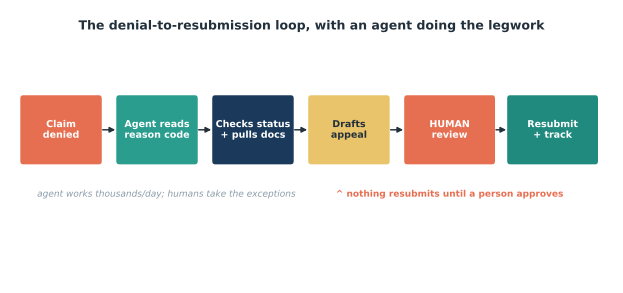
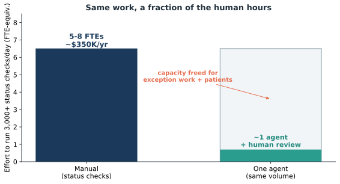

Issue 4 — Proof at home: agents in the revenue cycle
Sari runs a denials team at one of our hospitals. For years her Monday started the same way: a queue of 300–400 denied claims, and a whole morning spent triaging — which payer, which reason code, which ones are worth appealing, which are just missing a document. The real work, the judgment calls, couldn't start until that sorting was done. Often it was lunchtime before she got there.

This particular Monday was different. Over the weekend an agent had worked the queue. It read each denial, pulled the reason code, checked the claim's live status on the payer portal, gathered the supporting documentation, and drafted an appeal where the case was clear. When Sari logged in, the queue wasn't a pile anymore — it was sorted, most of it pre-drafted, with the genuinely tricky cases flagged and set aside for her. She didn't spend the morning sorting. She spent it deciding.
This is our line made real: a chatbot answers; an agent acts. A chatbot could have told Sari what reason code 197 means. The agent went and did something about 380 of them — and then stopped, on purpose, at the one place that matters.

Because here's the safeguard, and Sari checked it first (Figure 4.1). Nothing was resubmitted. The agent read, checked, and drafted at machine scale, then hit a human gate. Every appeal waited for Sari's review and approval before going back to the payer. Every action the agent took was logged under its own scoped "agent identity," so if anyone asked who did what, the trail was cleaner than a hundred manual clicks would have left. The agent carried the volume; Sari carried the decision.
What did that buy her team? Look at Figure 4.2. Running thousands of status checks a day by hand is the equivalent of five to eight full-time people. Handing that to an agent didn't shrink Sari's team — it moved them off the treadmill and onto the exceptions, the appeals worth fighting, and frankly the parts of the job that use their training. One of her analysts told her, "I finally feel like I'm doing collections, not data entry."
That's the quiet promise of agents in the revenue cycle. Not fewer people — better-spent people. The denial that needed a phone call still gets a human who knows the payer. The judgment about what's worth appealing stays with the team that's earned that instinct. The grind found a new owner.
Sources
- solventum.com; healthcarefinancenews.com — one agent ≈ 3,000+ claim-status checks/day ≈ 5–8 FTEs (~$350K/yr).
- McKinsey — 30–60% reduction in cost-to-collect (healthcare RCM).
- kore.ai; Generative, Inc. (2026) — "a chatbot answers; an agent acts."